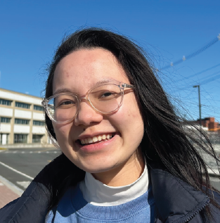

Megan Ken
Scripps Fellow, Principal Investigator | mken@scripps.edu

Julia Polay
Lab Administrative Coordinator | jpolay@scripps.edu
While my own background stems from an education and career outside of the sciences, I have spent the better part of the last decade surrounded by chemists. My previous experiences have demanded acute organization, clear communication, and an eye for detail. Nothing gives me more fulfillment than supporting a team of great minds and helping them achieve results.

Catherine Li
Graduate Student | cali@scripps.edu
I received my bachelor's degree in Biology from the University of Pennsylvania. At Penn, I conducted undergraduate and post-baccalaureate research in the lab of Dr. Shelley Berger, where I studied epigenetic regulators of senescence and aging as well as gene activation by nuclear speckles. I then worked at Aro Biotherapeutics as part of the preclinical research team, developing protein-siRNA conjugate drugs for rare genetic disorders and immune-mediated diseases. After matriculating at the Skaggs Graduate School of Chemical and Biological Sciences in 2023, I joined the Ken Lab as a PhD student. I am interested in studying RNA structural dynamics of HIV using biologically-relevant models and am excited about the application of these findings to RNA-targeted drug development.

Shawn Sandhu
Jacob Scherba 
Jenny Nguyen
Research Technician | ssandhu@scripps.edu
I graduated from Michigan State University (MSU) with a bachelor's degree in chemistry. As an undergraduate at MSU, I worked as a researcher in Dr. Marcos Dantus' laboratory to study chemical reactions following strong-field ionization. I combined information from both femtosecond laser experiments and ab initio molecular dynamics to deduce mechanistic details of the reactions studied. After completing my undergrad, I joined Dr. Ken's lab to study the structural dynamics of RNA. I am looking forward to seeing our findings being used to help develop RNA targeting drugs.

Professional Scientific Collaborator | jscherba@scripps.edu
I graduated from Harvard University in 2018 with an SB in Bioengineering, and I then made my way to Duke to pursue an MD/PhD in Biomedical Engineering, with a particular focus on cellular mechanics and mechanobiology. Along the way, I discovered a passion for structural biochemistry and the ways we can exploit molecular mechanics to modify human disease. While I am still pursuing my PhD at Duke, I am thrilled to be collaborating with the Ken Lab using machine learning techniques to predict the structure of RNA binding proteins and their substrates. We are endeavoring to leverage this interface of nanobiomechanics and computation to further the field of RNA therapeutics with the goal of rationally improving treatment strategies.
Undergraduate Intern | ngunguyenscripps.edu
I am a rising senior at Kalamazoo College, majoring in Biochemistry and minoring in Computer Science and Pure Mathematics. During my undergraduate journey, I have explored a variety of research. I had the opportunity to develop RNA biomarkers in Dr. Furchak’s, investigate the reduction and oxidating properties of inorganic complexes in Dr. Arias-Rontodo’s lab, both at K College, and computationally and experimentally design protein binders in Dr. Hosseinzadeh’s lab at the University of Oregon as a Rosetta Summer Intern. These experiences ignited my interest in RNA-protein interaction research, especially by incorporating computational and experimental methods. This summer, I joined the Ken lab as an intern to study RNA interactions with small molecules. I am very excited to contribute these findings to RNA-targeted therapeutics.
We are recruiting!
There are open positions for laboratory technicians, graduate students, post-docs, and interns. If interested, please e-mail your CV to jpolay@scripps.edu